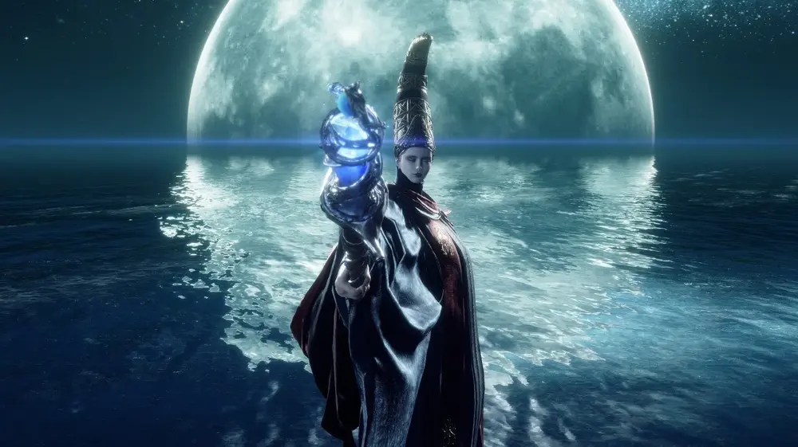

Godfrey

The first required boss in Leyndell, Godfrey is a large golden brute with a giant axe. Some recommend starting the fight with a summon.
Margit, "The Fell Omen"
Margit, the Fell Omen, is one of the early bosses in "Elden Ring" and serves as a significant challenge for players early in the game. Margit is later revealed to be an avatar of Morgott, the Omen King, who is one of the demigods and a significant figure in the lore of the Lands Between. This connection adds depth to his character and ties into the overarching narrative of the game.
Rennala, "Queen of the Full Moon"
Rennala, Queen of the Full Moon, is the head of the Carian Royal Family and a renowned sorceress. She was married to Radagon, one of the demigods, and they had children together, including Ranni the Witch. Her role as the head of the Academy and her connection to the demigod Radagon ties her deeply into the lore of the Lands Between. She represents the pinnacle of sorcery and the tragic fall of a once-great leader.
Radahn, "The Starscourge"

Radahn, also known as the Starscourge, is said to be the most powerful demigods in the Lands Between. He is the son of Radagon and Queen Rennala and the brother of Ranni the Witch.
Rykard, "Lord of Blasphemy"
Rykard, once a noble demigod, became the Lord of Blasphemy by embracing the Great Serpent in his quest for immortality and power. He rebelled against the Golden Order, seeking to overthrow it by gaining strength through grotesque means. His transformation into the serpent represents his complete abandonment of his former self and his embrace of heretical practices. Rykard's actions and blasphemous beliefs lead to a significant schism, impacting the balance of power among the demigods and the overall stability of the Lands Between. His presence in Mt. Gelmir and the legacy of his blasphemous cult highlight the theme of corruption and the consequences of defying divine order.
Morgott, "The Omen King"

As an Omen, he was born with accursed features and shunned by society, yet he rose to power by sheer force of will. Morgott is revealed to be Margit, the Fell Omen, in disguise, showcasing his strategic foresight and persistence. Despite his cursed nature, he remains fiercely loyal to the Golden Order and acts as its staunch defender. Morgott's complex character highlights themes of duty, identity, and the struggle against fate. His role as a protector of the Erdtree and his conflicts with other demigods emphasize the fractured and tumultuous state of the Lands Between.
Mohg, "Lord of Blood"
As an Omen, like his twin brother Morgott, he was born with cursed features and faced rejection. However, unlike Morgott, Mohg embraced his dark nature and sought power through blood magic. He became the leader of the Mohgwyn Dynasty, establishing a cult dedicated to the worship of an outer god of blood. Mohg's actions and ambitions pose a direct threat to the established order and highlight the theme of forbidden power. His connection to Miquella, whom he kidnaps in a bid to gain even greater power, underscores his ruthless and ambitious nature. Mohg's storyline adds depth to the game's exploration of corruption, ambition, and the complex dynamics between the demigods.
Malenia, "Blade of Miquella"

Malenia is renowned as one of the most formidable warriors among the demigods, known for her unmatched combat prowess and her fierce loyalty to her twin brother, Miquella. Malenia is afflicted by the Scarlet Rot, a devastating disease that she uses to her advantage in battle, even as it slowly consumes her. Her connection to Miquella is profound, as she serves both as his protector and as the instrument of his ambitions. Malenia's duel with Radahn, which results in widespread devastation, marks a pivotal moment in the history of the Lands Between, showcasing the destructive power and tragic consequences of the demigods' conflicts. Her character embodies themes of sacrifice, loyalty, and the tragic hero, adding a layer of depth and complexity to the game's narrative.
The Fire Giant

As the last of his kind, he guards the Forge of the Giants in the Mountaintops of the Giants, a crucial location tied to the narrative's progression. His race was nearly exterminated by the forces of the Golden Order, which sought to eliminate threats to its supremacy. The Fire Giant's role as the keeper of the forge highlights his importance in the world's history and the lingering power of the giants. His defeat is necessary to access the forge, a pivotal moment that allows the player to enact a major change in the world, furthering the themes of sacrifice, loss, and the cyclical nature of destruction and renewal.
Radagon , "of the Golden Order"
Radagon is a complex character, having initially been a warrior who later ascended to godhood. Radagon was once married to Rennala, Queen of the Full Moon, with whom he had children, including Ranni the Witch. He later left her to become the consort of Queen Marika the Eternal, taking on the role of the second Elden Lord. Radagon's duality is a significant theme, as he embodies both the ideals and the contradictions of the Golden Order. His split nature is further exemplified by his fusion with Marika, revealing the intricate and often conflicting forces at play within the world's divine hierarchy. Radagon's actions and his complex relationships with other key characters drive much of the game's backstory and the current state of the Lands Between.
They are in the same fight
Elden Beast
The Elden Beast is the true form of the Elden Ring and serves as the final boss of the game.
It represents the physical manifestation of the Greater Will, an outer god that seeks to impose order on the Lands Between.
The Elden Beast's existence and its connection to Radagon/Marika symbolize the overarching control exerted by the Greater Will over the world's fate.
The battle against the Elden Beast is a climactic moment, representing the player's ultimate challenge in breaking free from the divine constraints
imposed by the Greater Will. Defeating the Elden Beast signifies a potential shift in the
cosmic order, emphasizing themes of rebellion, freedom, and the transformative power of defiance against predestined order.
Elden Beast
The Elden Beast is the true form of the Elden Ring and serves as the final boss of the game. It represents the physical manifestation of the Greater Will, an outer god that seeks to impose order on the Lands Between. The Elden Beast's existence and its connection to Radagon/Marika symbolize the overarching control exerted by the Greater Will over the world's fate. The battle against the Elden Beast is a climactic moment, representing the player's ultimate challenge in breaking free from the divine constraints imposed by the Greater Will. Defeating the Elden Beast signifies a potential shift in the cosmic order, emphasizing themes of rebellion, freedom, and the transformative power of defiance against predestined order.